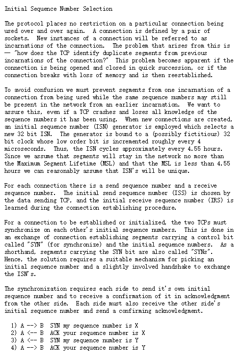
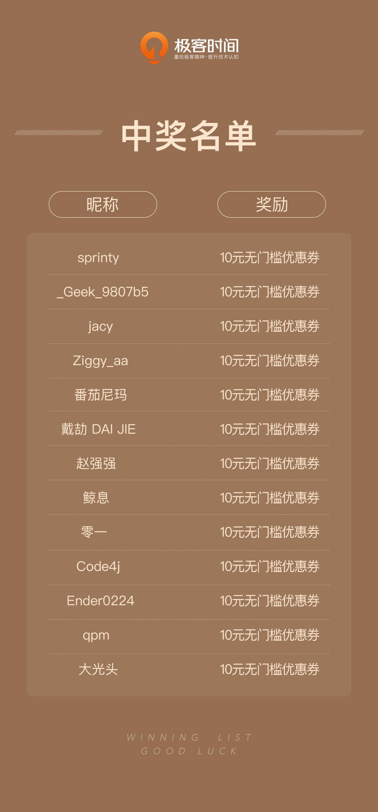

- 00 开篇词 想成为技术牛人？先搞定网络协议！.md.html
- 01 为什么要学习网络协议？.md.html
- 02 网络分层的真实含义是什么？.md.html
- 03 ifconfig：最熟悉又陌生的命令行.md.html
- 04 DHCP与PXE：IP是怎么来的，又是怎么没的？.md.html
- 05 从物理层到MAC层：如何在宿舍里自己组网玩联机游戏？.md.html
- 06 交换机与VLAN：办公室太复杂，我要回学校.md.html
- 07 ICMP与ping：投石问路的侦察兵.md.html
- 08 世界这么大，我想出网关：欧洲十国游与玄奘西行.md.html
- 09 路由协议：西出网关无故人，敢问路在何方.md.html
- 10 UDP协议：因性善而简单，难免碰到“城会玩”.md.html
- 11 TCP协议（上）：因性恶而复杂，先恶后善反轻松.md.html
- 12 TCP协议（下）：西行必定多妖孽，恒心智慧消磨难.md.html
- 13 套接字Socket：Talk is cheap, show me the code.md.html
- 14 HTTP协议：看个新闻原来这么麻烦.md.html
- 15 HTTPS协议：点外卖的过程原来这么复杂.md.html
- 16 流媒体协议：如何在直播里看到美女帅哥？.md.html
- 17 P2P协议：我下小电影，99%急死你.md.html
- 18 DNS协议：网络世界的地址簿.md.html
- 19 HttpDNS：网络世界的地址簿也会指错路.md.html
- 20 CDN：你去小卖部取过快递么？.md.html
- 21 数据中心：我是开发商，自己拿地盖别墅.md.html
- 22 VPN：朝中有人好做官.md.html
- 23 移动网络：去巴塞罗那，手机也上不了脸书.md.html
- 24 云中网络：自己拿地成本高，购买公寓更灵活.md.html
- 25 软件定义网络：共享基础设施的小区物业管理办法.md.html
- 26 云中的网络安全：虽然不是土豪，也需要基本安全和保障.md.html
- 27 云中的网络QoS：邻居疯狂下电影，我该怎么办？.md.html
- 28 云中网络的隔离GRE、VXLAN：虽然住一个小区，也要保护隐私.md.html
- 29 容器网络：来去自由的日子，不买公寓去合租.md.html
- 30 容器网络之Flannel：每人一亩三分地.md.html
- 31 容器网络之Calico：为高效说出善意的谎言.md.html
- 32 RPC协议综述：远在天边，近在眼前.md.html
- 33 基于XML的SOAP协议：不要说NBA，请说美国职业篮球联赛.md.html
- 34 基于JSON的RESTful接口协议：我不关心过程，请给我结果.md.html
- 35 二进制类RPC协议：还是叫NBA吧，总说全称多费劲.md.html
- 36 跨语言类RPC协议：交流之前，双方先来个专业术语表.md.html
- 37 知识串：用双十一的故事串起碎片的网络协议（上）.md.html
- 38 知识串：用双十一的故事串起碎片的网络协议（中）.md.html
- 39 知识串：用双十一的故事串起碎片的网络协议（下）.md.html
- 40 搭建一个网络实验环境：授人以鱼不如授人以渔.md.html
- 加餐1 创作故事：我是如何创作“趣谈网络协议”专栏的？.md.html
- 协议专栏特别福利 答疑解惑1期.md.html
- 协议专栏特别福利 答疑解惑2期.md.html
- 协议专栏特别福利 答疑解惑3期.md.html
- 协议专栏特别福利 答疑解惑4期.md.html
- 协议专栏特别福利 答疑解惑5期.md.html
- 结束语 放弃完美主义，执行力就是限时限量认真完成.md.html
- 捐赠
协议专栏特别福利 答疑解惑3期
你好，我是刘超。
第三期答疑涵盖第7讲至第13讲的内容。我依旧对课后思考题和留言中比较有代表性的问题作出回答。你可以点击文章名，回到对应的章节复习，也可以继续在留言区写下你的疑问，我会持续不断地解答。希望对你有帮助。
《第7讲 | ICMP与ping：投石问路的侦察兵》
课后思考题
当发送的报文出问题的时候，会发送一个ICMP的差错报文来报告错误，但是如果 ICMP 的差错报文也出问题了呢？
我总结了一下，不会导致产生ICMP差错报文的有：
ICMP差错报文（ICMP查询报文可能会产生ICMP差错报文）；
目的地址是广播地址或多播地址的IP数据报；
作为链路层广播的数据报；
不是IP分片的第一片；
源地址不是单个主机的数据报。这就是说，源地址不能为零地址、环回地址、广播地址或多播地址。
留言问题
1.ping使用的是什么网络编程接口？

咱们使用的网络编程接口是Socket，对于ping来讲，使用的是ICMP，创建Socket如下：
socket(AF_INET, SOCK_RAW, IPPROTO_ICMP)
SOCK_RAW就是基于IP层协议建立通信机制。
如果是TCP，则建立下面的Socket：
socket(AF_INET, SOCK_STREAM, IPPROTO_TCP)
如果是UDP，则建立下面的Socket：
socket(AF_INET, SOCK_DGRAM, IPPROTO_UDP)
2.ICMP差错报文是谁发送的呢？
我看留言里有很多人对这个问题有疑惑。ICMP包是由内核返回的，在内核中，有一个函数用于发送ICMP的包。
void icmp_send(struct sk_buff *skb_in, int type, int code, __be32 info);
例如，目标不可达，会调用下面的函数。
icmp_send(skb, ICMP_DEST_UNREACH, ICMP_PROT_UNREACH, 0);
当IP大小超过MTU的时候，发送需要分片的ICMP。
if (ip_exceeds_mtu(skb, mtu)) {
icmp_send(skb, ICMP_DEST_UNREACH, ICMP_FRAG_NEEDED, htonl(mtu));
goto drop;
}
《第8讲 | 世界这么大，我想出网关：欧洲十国游与玄奘西行》
课后思考题
当在你家里要访问 163 网站的时候，你的包需要 NAT 成为公网 IP，返回的包又要 NAT 成你的私有 IP，返回包怎么知道这是你的请求呢？它怎么能这么智能地 NAT 成了你的 IP 而非别人的 IP 呢？
这是个比较复杂的事情。在讲云中网络安全里的iptables时，我们讲过conntrack功能，它记录了SNAT一去一回的对应关系。
如果编译内核时开启了连接跟踪选项，那么Linux系统就会为它收到的每个数据包维持一个连接状态，用于记录这条数据连接的状态。

根据咱们学过的Netfilter的流程图，我们知道，网络包有三种路径：
发给我的，从PREROUTING到INPUT，我就接收了；
我发给别人的，从OUTPUT到POSTROUTING，就发出去的；
从我这里经过的，从PREROUTING到FORWARD到POSTROUTING。
如果要跟踪一个网络包，对于每一种路径，都需要设置两个记录点，相当于打两次卡，这样内核才知道这个包的状态。
对于这三种路径，打卡的点是这样设置的：
发给我的，在PREROUTING调用ipv4_conntrack_in，创建连接跟踪记录；在INPUT调用ipv4_confirm，将这个连接跟踪记录挂在内核的连接跟踪表里面。为什么不一开始就挂在内核的连接跟踪表里面呢？因为有filter表，一旦把包过滤了，也就是丢弃了，那根本没必要记录这个连接了。
我发给别人的，在OUTPUT调用ipv4_conntrack_local，创建连接跟踪记录，在POSTROUTING调用ipv4_confirm，将这个连接跟踪记录挂在内核的连接跟踪表里面。
从我这里经过的，在PREROUTING调用ipv4_conntrack_in，创建连接跟踪记录，在POSTROUTING调用ipv4_confirm，将这个连接跟踪记录挂在内核的连接跟踪表里面。
网关主要做转发，这里主要说的是NAT网关，因而我们重点来看“从我这里经过的”这种场景，再加上要NAT，因而将NAT的过程融入到连接跟踪的过程中来：
如果是PREROUTING的时候，先调用ipv4_conntrack_in，创建连接跟踪记录；
如果是PREROUTING的时候，有NAT规则，则调用nf_nat_ipv4_in进行地址转换；
如果是POSTROUTING的时候，有NAT规则，则调用nf_nat_ipv4_out进行地址转换；
如果是POSTROUTING的时候，调用ipv4_confirm，将这个连接跟踪记录挂在内核的连接跟踪表里面。
接下来，我们来看，在这个过程中涉及到的数据结构：连接跟踪记录、连接跟踪表。
在前面讲网络包处理的时候，我们说过，每个网络包都是一个struct sk_buff，它有一个成员变量_nfct指向一个连接跟踪记录struct nf_conn。当然当一个网络包刚刚进来的时候，是不会指向这么一个结构的，但是这个网络包肯定属于某个连接，因而会去连接跟踪表里面去查找，之后赋值给sk_buff的这个成员变量。没找到的话，就说明是一个新的连接，然后会重新创建一个。
连接跟踪记录里面有几个重要的东西：
nf_conntrack其实才是_nfct变量指向的地址，但是没有关系，学过C++的话应该明白，对于结构体来讲，nf_conn和nf_conntrack的起始地址是一样的；
tuplehash虽然是数组，但是里面只有两个，IP_CT_DIR_ORIGINAL为下标0，表示连接的发起方向，IP_CT_DIR_REPLY为下标1，表示连接的回复方向。
struct nf_conn { …… struct nf_conntrack ct_general; …… struct nf_conntrack_tuple_hash tuplehash[IP_CT_DIR_MAX]; …… unsigned long status; …… }
在这里面，最重要的是nf_conntrack_tuple_hash的数组。nf_conn是这个网络包对应的一去一回的连接追踪记录，但是这个记录是会放在一个统一的连接追踪表里面的。
连接跟踪表nf_conntrack_hash是一个数组，数组中的每一项都是一个双向链表的头，每一项后面都挂着一个双向链表，链表中的每一项都是这个结构。
这个结构的第一项是链表的链，nf_conntrack_tuple是用来标识是否同一个连接。
从上面可以看出来，连接跟踪表是一个典型的链式哈希表的实现。
每当有一个网络包来了的时候，会将网络包中sk_buff中的数据提取出来，形成nf_conntrack_tuple，并根据里面的内容计算哈希值。然后需要在哈希表中查找，如果找到，则说明这个连接出现过；如果没找到，则生成一个插入哈希表。
通过nf_conntrack_tuple里面的内容，可以唯一地标识一个连接：
src：包含源IP地址；如果是TCP或者UDP，包含源端口；如果是ICMP，包含的是ID；
dst：包含目标IP地址；如果是TCP或者UDP，包含目标端口；如果是ICMP，包含的是type, code。
有了这些数据结构，我们接下来看这一去一回的过程。
当一个包发出去的时候，到达这个NAT网关的时候，首先经过PREROUTING的时候，先调用ipv4_conntrack_in。这个时候进来的包sk_buff为： {源IP：客户端IP，源端口：客户端port，目标IP：服务端IP，目标端口：服务端port}，将这个转换为nf_conntrack_tuple，然后经过哈希运算，在连接跟踪表里面查找，发现没有，说明这是一个新的连接。
于是，创建一个新的连接跟踪记录nf_conn，这里面有两个nf_conntrack_tuple_hash：
一去：{源IP：客户端IP，源端口：客户端port，目标IP：服务端IP，目标端口：服务端port}；
一回：{源IP：服务端IP，源端口：服务端port，目标IP：客户端IP，目标端口：客户端port}。
接下来经过FORWARD过程，假设包没有被filter掉，于是要转发出去，进入POSTROUTING的过程，有NAT规则，则调用nf_nat_ipv4_out进行地址转换。这个时候，源地址要变成NAT网关的IP地址，对于masquerade来讲，会自动选择一个公网IP地址和一个随机端口。
为了让包回来的时候，能找到连接跟踪记录，需要修改两个nf_conntrack_tuple_hash中回来的那一项为：{源IP：服务端IP，源端口：服务端port，目标IP：NAT网关IP，目标端口：随机端口}。
接下来要将网络包真正发出去的时候，除了要修改包里面的源IP和源端口之外，还需要将刚才的一去一回的两个nf_conntrack_tuple_hash放入连接跟踪表这个哈希表中。
当网络包到达服务端，然后回复一个包的时候，这个包sk_buff为：{源IP：服务端IP，源端口：服务端port，目标IP：NAT网关IP，目标端口：随机端口}。
将这个转换为nf_conntrack_tuple后，进行哈希运算，在连接跟踪表里面查找，是能找到相应的记录的，找到nf_conntrack_tuple_hash之后，Linux会提供一个函数。
static inline struct nf_conn *
nf_ct_tuplehash_to_ctrack(const struct nf_conntrack_tuple_hash *hash)
{
return container_of(hash, struct nf_conn,
tuplehash[hash->tuple.dst.dir]);
}
可以通过nf_conntrack_tuple_hash找到外面的连接跟踪记录nf_conn，通过这个可以找到来方向的那个nf_conntrack_tuple_hash，{源IP：客户端IP，源端口：客户端port，目标IP：服务端IP，目标端口：服务端port}，这样就能够找到客户端的IP和端口，从而可以NAT回去。
留言问题
1.NAT能建立多少连接？
SNAT多用于内网访问外网的场景，鉴于conntrack是由{源IP，源端口，目标IP，目标端口}，hash后确定的。
如果内网机器很多，但是访问的是不同的外网，也即目标IP和目标端口很多，这样内网可承载的数量就非常大，可不止65535个。
但是如果内网所有的机器，都一定要访问同一个目标IP和目标端口，这样源IP如果只有一个，这样的情况下，才受65535的端口数目限制，根据原理，一种方法就是多个源IP，另外的方法就是多个NAT网关，来分摊不同的内网机器访问。
如果你使用的是公有云，65535台机器，应该放在一个VPC里面，可以放在多个VPC里面，每个VPC都可以有自己的NAT网关。

其实SNAT的场景是内网访问外网，存在端口数量的问题，也是所有的机器都访问一个目标地址的情况。
如果是微信这种场景，应该是服务端在数据中心内部，无论多少长连接，作为服务端监听的都是少数几个端口，是DNAT的场景，是没有端口数目问题的，只有一台服务器能不能维护这么多连接，因而在NAT网关后面部署多个nginx来分摊连接即可。
2.公网IP和私网IP需要一一绑定吗？
公网IP是有限的，如果使用公有云，需要花钱去买。但是不是每一个虚拟机都要有一个公网IP的，只有需要对外提供服务的机器，也即接入层的那些nginx需要公网IP，没有公网IP，使用SNAT，大家共享SNAT网关的公网IP地址，也是能够访问的外网的。
我看留言中的困惑点都在于，要区分内主动发起访问外，还是外主动发起访问内，是访问同一个服务端，还是访问一大批服务端。这里就很明白了。
《第9讲 | 路由协议：西出网关无故人，敢问路在何方》
课后思考题
路由协议要在路由器之间交换信息，这些信息的交换还需要走路由吗？不是死锁了吗？
OSPF是直接基于IP协议发送的，而且OSPF的包都是发给邻居的，也即只有一跳，不会中间经过路由设备。BGP是基于TCP协议的，在BGP peer之间交换信息。
留言问题
1.多线BGP机房是怎么回事儿？
BGP主要用于互联网AS自治系统之间的互联，BGP的最主要功能在于控制路由的传播和选择最好的路由。各大运营商都具有AS号，全国各大网络运营商多数都是通过BGP协议与自身的AS来实现多线互联的。
使用此方案来实现多线路互联，IDC需要在CNNIC（中国互联网信息中心）或APNIC（亚太网络信息中心）申请自己的IP地址段和AS号，然后通过BGP协议将此段IP地址广播到其它的网络运营商的网络中。
使用BGP协议互联后，网络运营商的所有骨干路由设备将会判断到IDC机房IP段的最佳路由，以保证不同网络运营商用户的高速访问。
《第10讲 | UDP协议：因性善而简单，难免碰到“城会玩”》
课后思考题
都说 TCP 是面向连接的，在计算机看来，怎么样才算一个连接呢？
赵强强在留言中回答的是正确的。这是TCP的两端为了维护连接所保持的数据结构。
《第11讲 | TCP协议（上）：因性恶而复杂，先恶后善反轻松》
课后思考题
TCP 的连接有这么多的状态，你知道如何在系统中查看某个连接的状态吗？
留言问题
1.TIME_WAIT状态太多是怎么回事儿？


如果处于TIMEWAIT状态，说明双方建立成功过连接，而且已经发送了最后的ACK之后，才会处于这个状态，而且是主动发起关闭的一方处于这个状态。
如果存在大量的TIMEWAIT，往往是因为短连接太多，不断的创建连接，然后释放连接，从而导致很多连接在这个状态，可能会导致无法发起新的连接。解决的方式往往是：
打开tcp_tw_recycle和tcp_timestamps选项；
打开tcp_tw_reuse和tcp_timestamps选项；
程序中使用SO_LINGER，应用强制使用rst关闭。
当客户端收到Connection Reset，往往是收到了TCP的RST消息，RST消息一般在下面的情况下发送：
试图连接一个未被监听的服务端；
对方处于TIMEWAIT状态，或者连接已经关闭处于CLOSED状态，或者重新监听seq num不匹配；
发起连接时超时，重传超时，keepalive超时；
在程序中使用SO_LINGER，关闭连接时，放弃缓存中的数据，给对方发送RST。
2.起始序列号是怎么计算的，会冲突吗？
有同学在留言中问了几个问题。Ender0224的回答非常不错。

起始ISN是基于时钟的，每4毫秒加一，转一圈要4.55个小时。
TCP初始化序列号不能设置为一个固定值，因为这样容易被攻击者猜出后续序列号，从而遭到攻击。 RFC1948中提出了一个较好的初始化序列号ISN随机生成算法。
ISN = M + F (localhost, localport, remotehost, remoteport)
M是一个计时器，这个计时器每隔4毫秒加1。F是一个Hash算法，根据源IP、目的IP、源端口、目的端口生成一个随机数值。要保证Hash算法不能被外部轻易推算得出，用MD5算法是一个比较好的选择。
《第12讲 | TCP协议（下）：西行必定多妖孽，恒心智慧消磨难》
课后思考题
TCP的BBR听起来很牛，你知道它是如何达到这个最优点的吗？
《第13讲 | 套接字Socket：Talk is cheap, show me the code》
课后思考题
epoll是Linux上的函数，那你知道Windows上对应的机制是什么吗？如果想实现一个跨平台的程序，你知道应该怎么办吗？

epoll是异步通知，当事件发生的时候，通知应用去调用IO函数获取数据。IOCP异步传输，当事件发生时，IOCP机制会将数据直接拷贝到缓冲区里，应用可以直接使用。
如果跨平台，推荐使用libevent库，它是一个事件通知库，适用于Windows、Linux、BSD等多种平台，内部使用select、epoll、kqueue、IOCP等系统调用管理事件机制。
感谢第7讲至第13讲中对内容有深度思考和提出问题的同学。我会为你们送上奖励礼券和知识图谱。（稍后运营同学会发送短信通知。）
欢迎你继续提问！

© 2019 - 2023 Liangliang Lee. Powered by gin and hexo-theme-book.